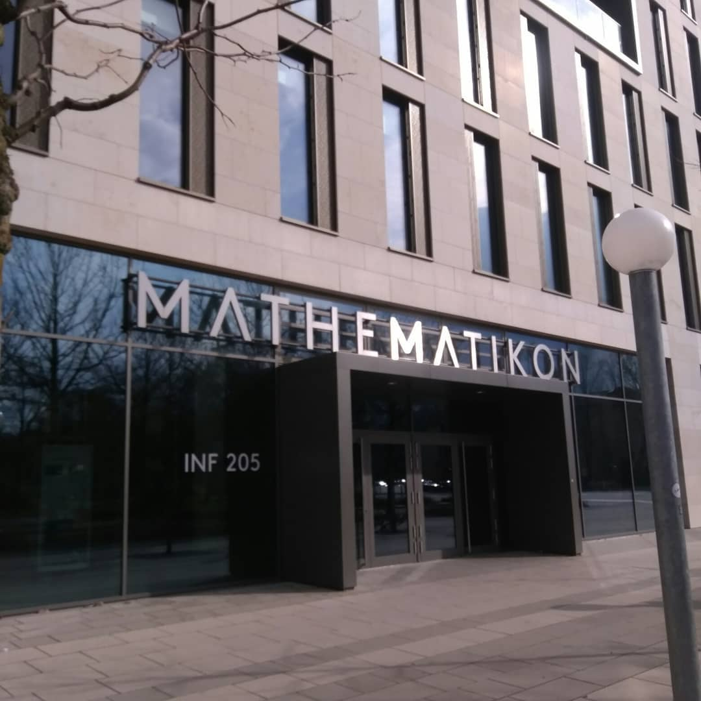

ISHIZAKA Hiroki, Ph. D. (Dr.)
石坂 宏樹
E-mail: h.ishizaka005 at gmail.com
Self-introduction
ResearchGate Google Scholar researchmap Arxiv スライド保管 (Under construction)

左から，にこ淵・高樋沈下橋・佐田岬・ハイデルベルク大学図書館・ハイデルベルク大学数学・ハイデルベルク城・ドイツ バンメンタール
Mathematics makes the invisible visible
Numerical Analysis for PDEs
ISHIZAKA Hiroki, Ph. D. (Dr.)
石坂 宏樹
E-mail: h.ishizaka005 at gmail.com
ResearchGate Google Scholar researchmap Arxiv スライド保管 (Under construction)
左から，にこ淵・高樋沈下橋・佐田岬・ハイデルベルク大学図書館・ハイデルベルク大学数学・ハイデルベルク城・ドイツ バンメンタール